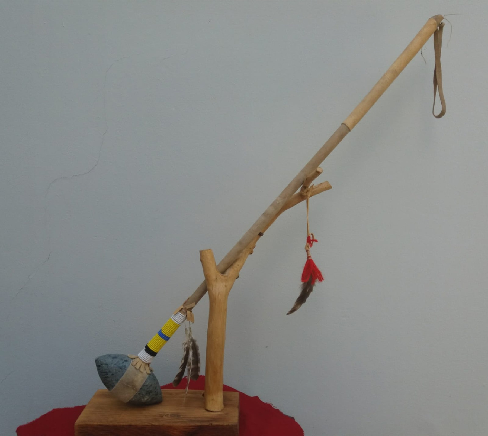
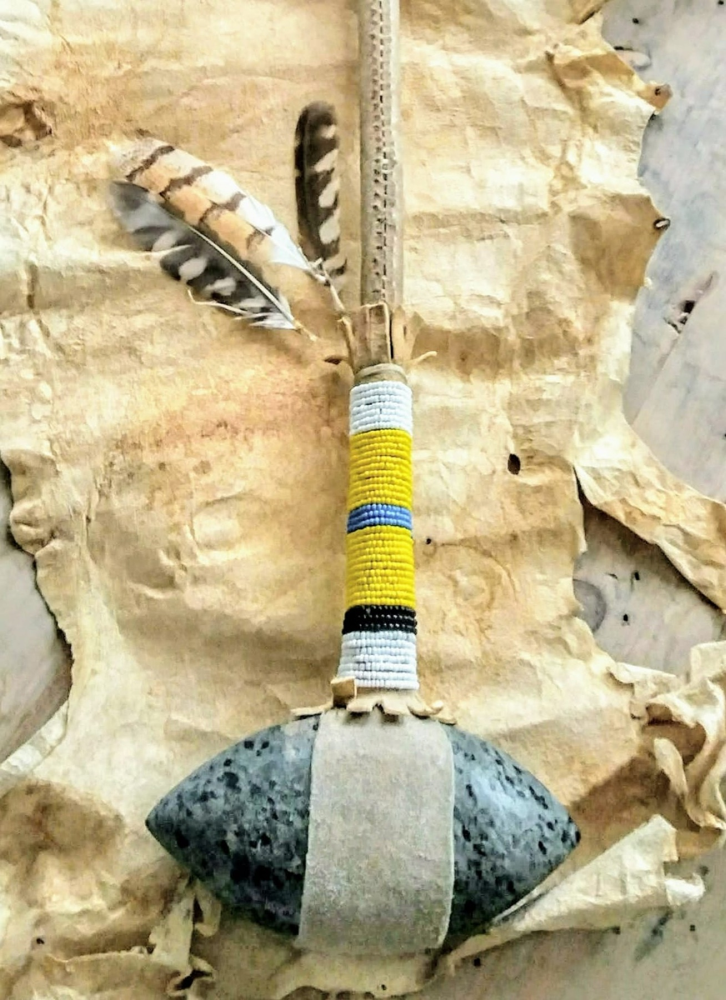

Diario · 25 novembre 2026
Perché il manico di una mazza delle Pianure è così lungo
La mia mazza con testa in pietra è lunga 88 centimetri, e quasi tutto è manico. Non l'ho deciso io: le mazze da guerra delle Pianure erano fatte così.
Mazze con una pietra fissata in cima a un manico di legno si usavano in tutto il Nord America, fin dalla preistoria. In epoca storica, quelle da guerra erano tipiche dei cavalieri delle Pianure. Si usavano da cavallo, e per questo il manico era piuttosto lungo.
La pietra di solito era ovoidale, con le estremità più o meno appuntite. A tenerla ferma era un rivestimento di pelle grezza, che avvolgeva tutto il manico e fasciava la pietra a metà.

La mia l'ho fatta nello stile delle Pianure, sul modello dei primi del Novecento: testa in pietra e, subito sotto, il manico decorato di perline. Le perline fanno delle fasce: bianco, nero, giallo, una riga di blu, ancora giallo e di nuovo bianco. Dal manico pendono delle piume. Anche sulla mia la pietra ha le punte, e una fascia chiara la stringe a metà.

Non tutte erano così. Altre mazze, diffuse soprattutto fra gli Apache, avevano una testa tonda, tutta avvolta nella pelle grezza e attaccata al manico con un giunto mobile. Su quelle il manico poteva essere carico di aculei di porcospino, perline di vetro, crini di cavallo, penne di rapaci.
Dopo le guerre indiane
Erano armi da corpo a corpo: con l'arrivo delle armi da fuoco a ripetizione, in battaglia non servirono più. Finite le guerre indiane, restarono come oggetti rituali nelle danze, e molte furono vendute come souvenir ai turisti.
Le mazze più recenti si riconoscono dalla fattura meno robusta, dalle pietre tenere, spesso scolpite finemente a forma di animali, e dalle decorazioni appariscenti, anche troppe.
È un pezzo unico, ed è in vendita. Se ti interessa questa, o un altro dei miei pezzi, scrivimi dalla pagina Contatti.
Mazza con testa in pietra e decorazione in perline (stone headed war club) · Stile delle Pianure · lunghezza 88 cm · supporto in legno di arancio, 26 × 12 × 3,5 cm